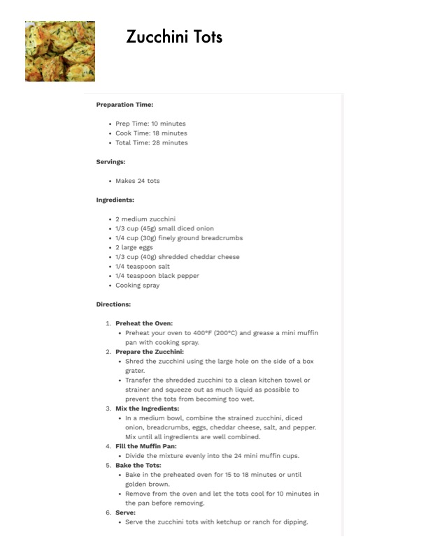

Zucchini Tots

Original cookbook page 654
Ingredients
- * 2 medium zucchini
- 1/3 cup (45g) small diced onion
- 1/4 cup (30g) finely ground breadcrumbs
- 2 large eggs
- 1/3 cup (40g) shredded cheddar cheese
- 1/4 teaspoon salt
- 1/4 teaspoon black pepper
- Cooking spray
Instructions
- Preheat the Oven: + Preheat your oven to 400°F (200°C) and grease a mini muff pan with cooking spray.
- Prepare the Zuccl + Shred the zucchini using the large hole on the side of a bo: grater. * Transfer the shredded zucchini to a clean kitchen towel or strainer and squeeze out as much liquid as possible to prevent the tots from becoming too wet. * In a medium bowl, combine the strained zucchini, diced onion, breadcrumbs, eggs, cheddar cheese, salt, and peppe
- Fill the Muffin Pan: + Divide the mixture evenly into the 24 mini muffin cups.
- Bake the Tots: « Bake in the preheated oven for 15 to 18 minutes or until golden brown. + Remove from the oven and let the tots cool for 10 minutes the pan before removing.
- Serve: + Serve the zucchini tots with ketchup or ranch for dipping.
Recipe #654 from collection